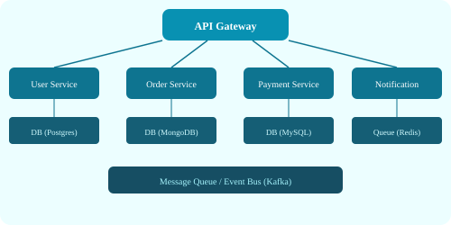

Also called n-tier architecture, this pattern separates an application into logical layers:
# 3-Tier Request Flow
Browser (Presentation) → sends HTTP request
Load Balancer → routes to Application Server
Application Server (Business Logic) → processes request
Application Server queries Database (Data Tier)
Response flows back through the same chainMicroservices decompose an application into small, independently deployable services, each responsible for a specific business capability.

Key characteristics:
| Factor | Monolith | Microservices |
|---|---|---|
| Deployment | Single deploy unit | Independent deploys |
| Scaling | Scale entire app | Scale per service |
| Development | Simple to start | Complex coordination |
| Testing | End-to-end easier | Contract testing needed |
| Team autonomy | Low (shared codebase) | High (per-team ownership) |
Components communicate through events — messages published to an event bus. Producers emit events without knowing who consumes them. Consumers subscribe to relevant events.
# Event-Driven Flow
User places order → Order Service publishes "order.created" event
Event Bus (Kafka/RabbitMQ) distributes the event
Inventory Service consumes → reserves stock
Notification Service consumes → sends confirmation email
Analytics Service consumes → records order dataBenefits: Loose coupling, asynchronous processing, excellent for workflows spanning multiple services.
Challenges: Event ordering, exactly-once processing, debugging event chains, eventual consistency.
A service mesh (e.g., Istio, Linkerd) adds a sidecar proxy to each service instance to handle service-to-service communication, observability, and security. It separates these concerns from application code.
Separates read and write operations into different models. Writes go through commands; reads go through separate queries — possibly using different data stores or schemas optimized for each purpose.